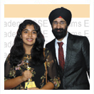

STUDENTS' TESTIMONIALS
Janvi Bohra, 1st Ranker of NES, 96 in English at ICSE 2016.
-
 Vikramjit Sir is that angel and friend who guides his students or rather his children like a polestar making their herculean tasks a cakewalk. English was not my cup of tea but because of Sir's hardwork and faith, it became my strength.
Vikramjit Sir is that angel and friend who guides his students or rather his children like a polestar making their herculean tasks a cakewalk. English was not my cup of tea but because of Sir's hardwork and faith, it became my strength.
Read full testimonial
Maria Antony, 2nd in English in JK Singhania School, 96 in English at ICSE 2016.
- I have been associated with Vikram’s English Academy since the ninth standard. It's been something I've never experienced before. There was not a single lecture where I dozed off. Sir makes sure that every child is present not only physically but also mentally.
Read full testimonial